Barn Owl A.6
Reference study of the crown, lower facial disc and feathered hock.
Facial landmarks
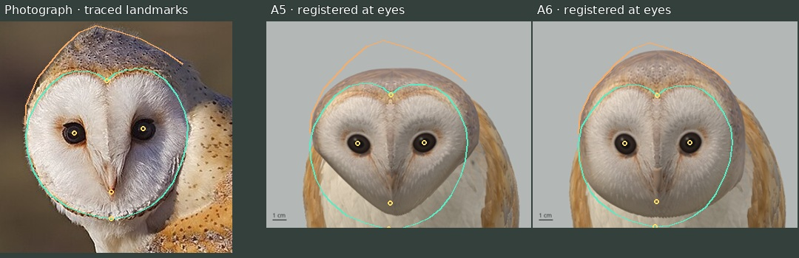
The two eye centres set translation, uniform scale and roll. Yaw, pitch and lens perspective remain. Use the trace to judge crown rise and cheek curvature. The right nape is partly occluded. The lower A6 ruff still falls slightly inside the photographic chin trace. The side silhouette comparison uses the common studio camera.
| Projected landmark | Reference estimate | A5 estimate | A6 estimate |
|---|---|---|---|
| Crown rise above eyes / eye separation | 1.54 | 1.12 | 1.42 |
| Eye midpoint to lower rim / eye separation | 1.28 | 1.07 | 1.13 |
| Eye separation / pale disc width | 0.42 | ≈0.44 | ≈0.41 |
Photo disc height is about 0.92 of its width. The upper cleft drops 0.07 widths below the lobes. The eye openings span 0.11–0.14 widths and the bill ends about 82% down the disc. The crown arcs above this cleft. A6 restores crown height and cheek fullness separately, keeps the modest brow hollow, narrows the aperture slightly and follows the local facial ridge with the bill. The fine radial vanes vary in width and angle around the open lids. Baked filaments carry the finer detail.
Pixel landmarks, normalization and visibility notes recorded before editing
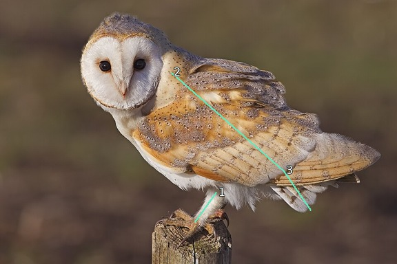
The feathered segment approaches the toes obliquely. A6 moves the hock rearward and extends the broad upper-leg plumage down its forward slope. The distal toes retain their grip pose. Shallower, tapering scutes follow the proximal joints and the claw centreline follows the perch curvature. Tail and torso projections depend strongly on body yaw. Their reference measurements are recorded in the notes.
| Perched measurement | A5 | A6 |
|---|---|---|
| Head width | 11.94 cm | 11.77 cm |
| Head height | 10.96 cm | 12.42 cm |
| Head depth including nape | 14.30 cm | 14.31 cm |
| Head pivot forward offset | 6.85 cm | 6.85 cm |
| Torso height | 19.99 cm | 19.99 cm |
| Torso fore–aft length | 23.35 cm | 23.35 cm |
| Narrow distal leg length¹ | ≈34 mm | ≈25 mm |
| Deepest sampled claw penetration² | 8.84 mm | 0.65 mm |
¹ Vertical distance from the 20 mm wide loft section to the toe pad, interpolated between guide rings in the perched pose. This describes where the leg looks slender. ² LOD0 skinned vertices against the tapered review perch. A6 pad and distal toe surfaces seat about 0.6 and 1.3 mm into the branch respectively. Measured bounds and contact clearances.
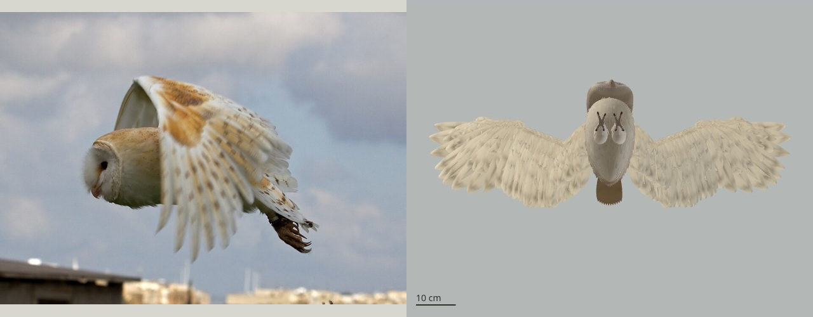
A6 samples ventral marks from the spare row of the existing feather atlas. Each mark follows an individual vane through articulation. Dorsal tile selection varies across neighbouring feathers. Finer shaft highlights and barbs stay in the rough shared material. The folded-wing geometry, torso and animation curves retain their A5 construction.
Perched photograph by Steven Ward, flight photograph by Tony Hisgett. The landmark studies use crops, annotations and resized reproductions. Perched original · Flight original · CC BY 2.0

.jpg){kind=link}
Matched A5 and A6 views
A5 appears on the left. Both panels use the same orthographic camera, scale, studio lights and 120 fixed simulation steps. The extended wings use the unfolded pose. The other views use perched idle.
Facial disc
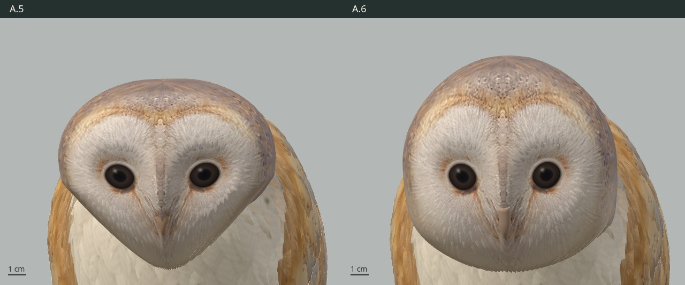
Front
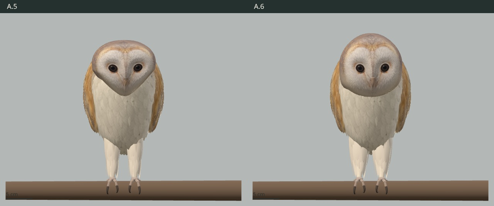
Side
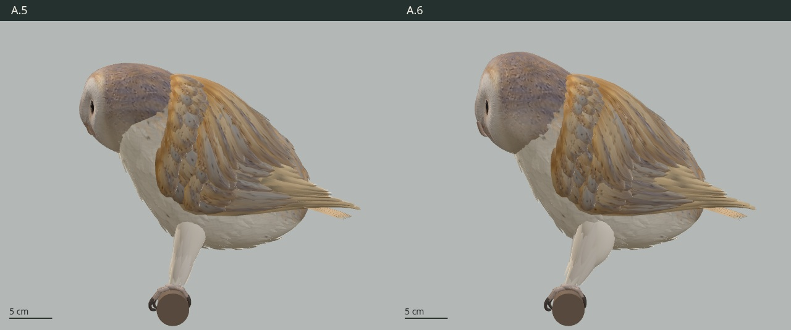
Rear
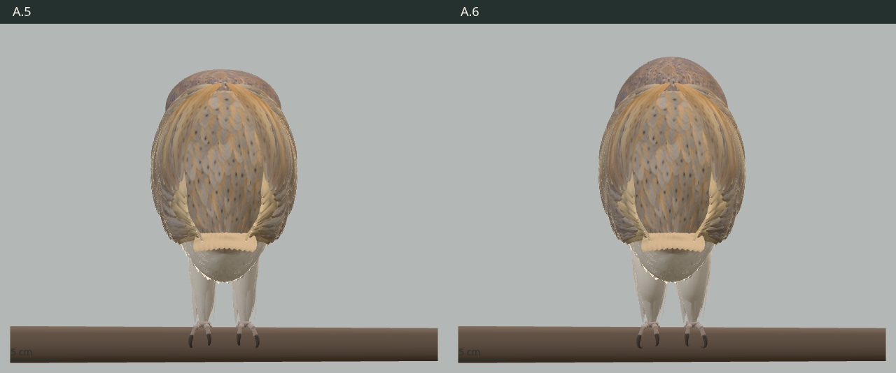
Three-quarter
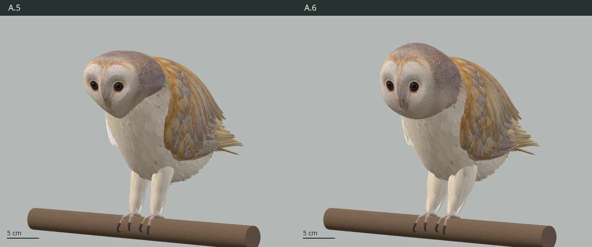
Feathered legs
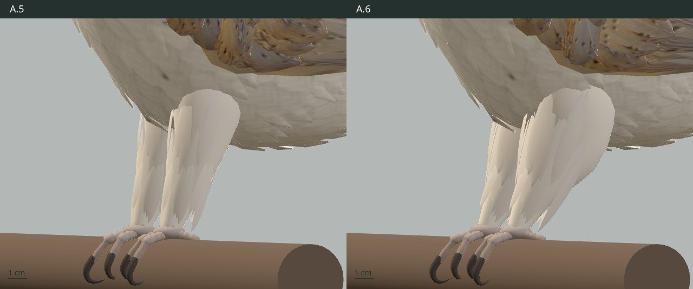
Perch contact
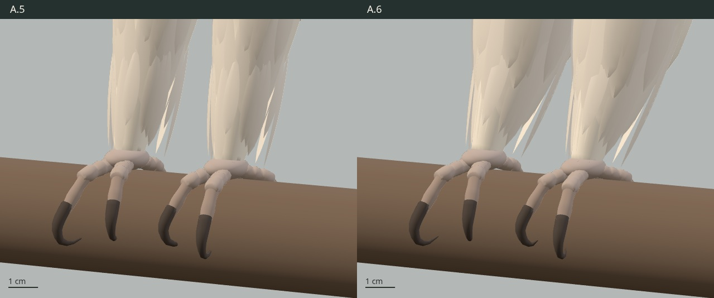
Extended dorsal surface
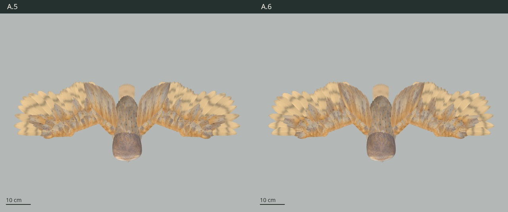
Extended ventral surface
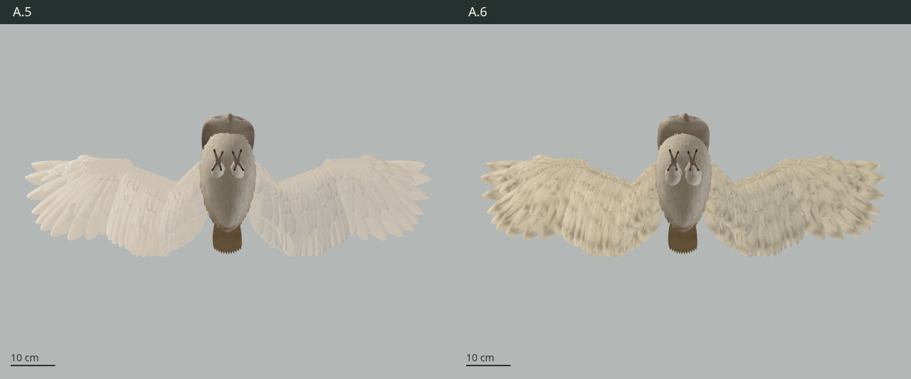
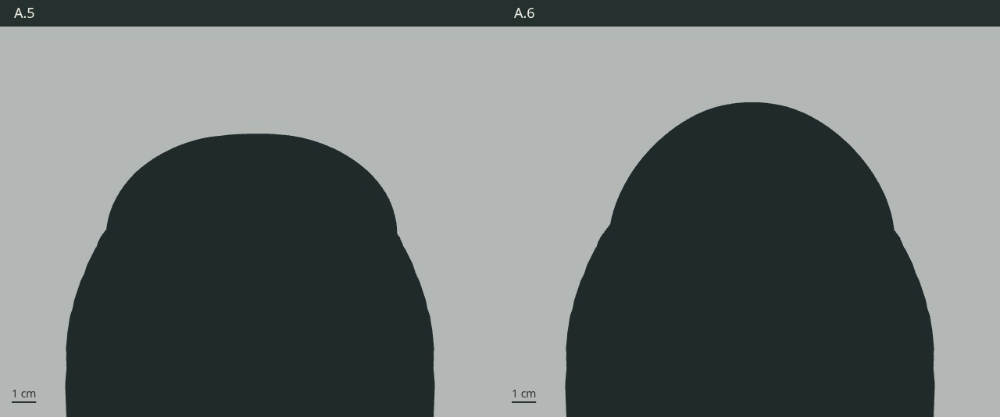
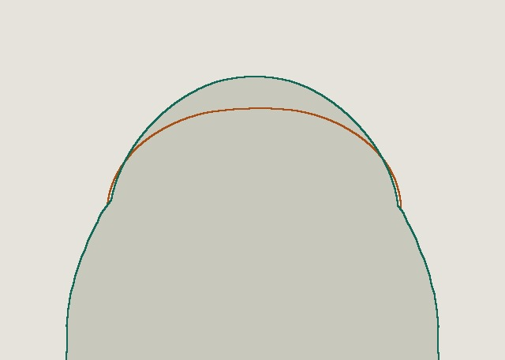
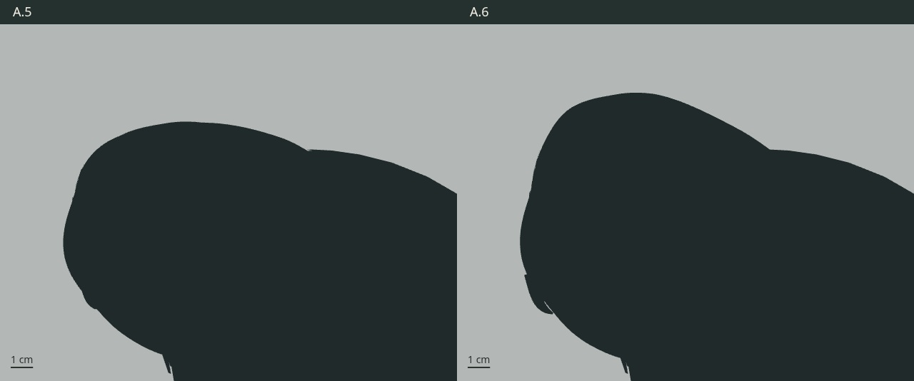
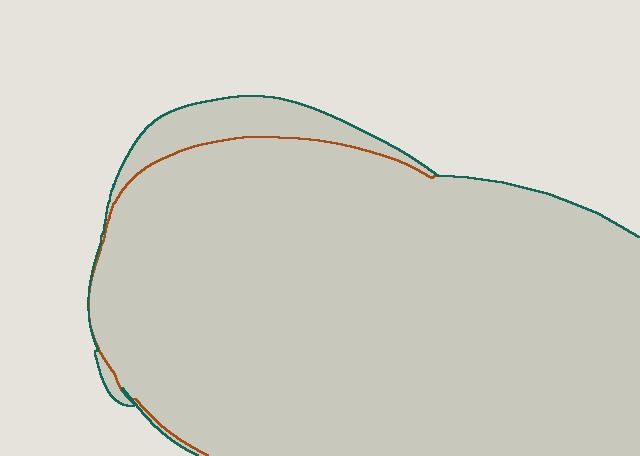
Software rendering measurements
Each comparison used one Chromium SwiftShader renderer, identical 640 × 500 framing and fixed-step powered flight. Four runs used A/B, B/A, B/A, A/B order within each LOD. After 12 warm-up frames, 32 frames measured animation update, draw and synchronous readback. Tables show the median of the four per-run medians and p95s. Frame timing includes CPU and software rendering. Hardware GPU costs remain unmeasured.
| Revision | LOD | Triangles | Draws | Atlas MiB | Median ms | P95 ms | P95 range ms |
|---|---|---|---|---|---|---|---|
| A.5 | 0 | 54,156 | 14 | 5.00 | 102.3 | 148.3 | 145.2–155.0 |
| A.6 | 0 | 54,396 | 14 | 5.00 | 102.2 | 125.2 | 115.7–198.5 |
| A.5 | 1 | 28,632 | 14 | 5.00 | 82.1 | 90.4 | 87.9–100.0 |
| A.6 | 1 | 28,728 | 14 | 5.00 | 83.1 | 97.8 | 86.3–102.7 |
| A.5 | 2 | 10,130 | 14 | 5.00 | 25.2 | 58.7 | 57.8–60.9 |
| A.6 | 2 | 10,158 | 14 | 5.00 | 26.3 | 63.2 | 59.1–67.0 |
A5 regression
The earlier single-run LOD0 p95 increased from 100.3 to 140.7 ms. The A4/A5 replay reproduced the direction in all four runs. To isolate the underwing lighting contribution, the second diagnostic used identical A5 models and albedo, removing only the transmission term in one instance. This term contributed to the observed software-rendering cost. Geometry, coverage and shading differences remain in the full A4/A5 comparison.
| LOD | A4 p95 | A5 p95 | A5 lighting test: stock | A5 lighting test: transmission off |
|---|---|---|---|---|
| 0 | 111.1 ms | 146.1 ms | 117.1 ms | 105.8 ms |
| 1 | 85.8 ms | 94.5 ms | 95.1 ms | 88.3 ms |
| 2 | 58.5 ms | 59.4 ms | 60.8 ms | 57.8 ms |
Each input file stores all 32 sampled frame times per run in sorted order. Reproduce with python tools/capture-owl-a3.py repeat --revision 5, then repeat with revision 6. Use lighting-cost --revision 6 for the isolated A5 test. Raw samples in milliseconds: A4/A5 replay · A5 lighting experiment · A5/A6 comparison.